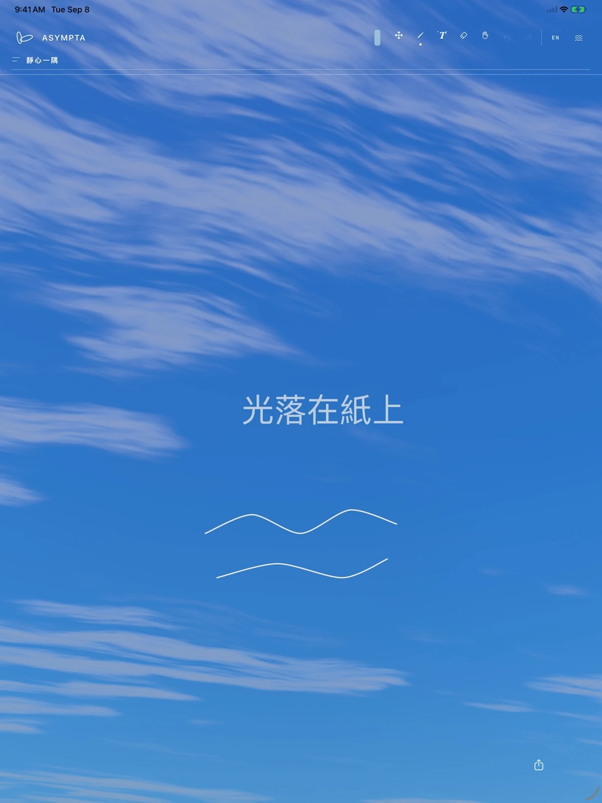
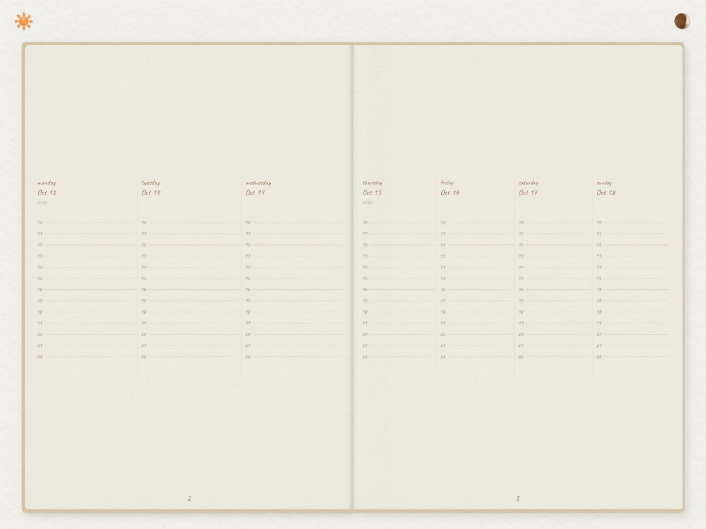

跳至目錄
Ka Ho Lau
目錄
聯絡
EN
MMXXVI
ASYMPTA
作品集
Ka Ho Lau
目錄
↓
i
ASYMPTA
MMXXVI
目錄
I.
Writing
01
II.
Paperie
02
III.
聯絡
03
ASYMPTA
I
I.
Writing
I — a

+
圖版 I · Writing
檢視 ↗
App Store ↗
支援 ↗
1
ASYMPTA
II
II.
Paperie
II — a

+
圖版 II · Paperie
檢視 ↗
App Store ↗
支援 ↗
2
ASYMPTA
III
III.
聯絡
開放專案與合作。
hello@everformlab.com
如電郵未獲回覆，或希望更快交流，亦可透過社交平台私訊。
X ↗
·
Threads ↗
3
ASYMPTA
EN
關閉 ×
I.
Writing
瀏覽器無法播放影片。
媒體載入失敗。
App Store ↗
支援 ↗